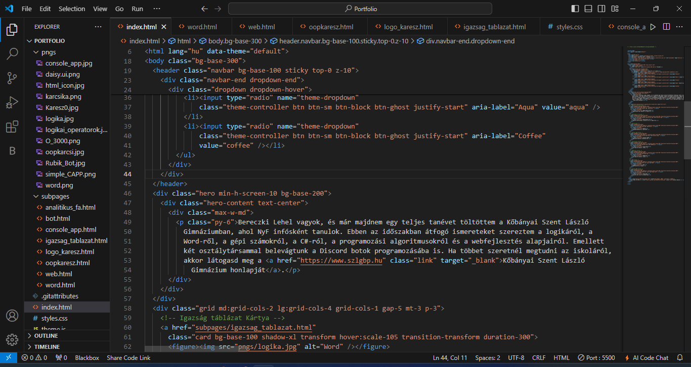
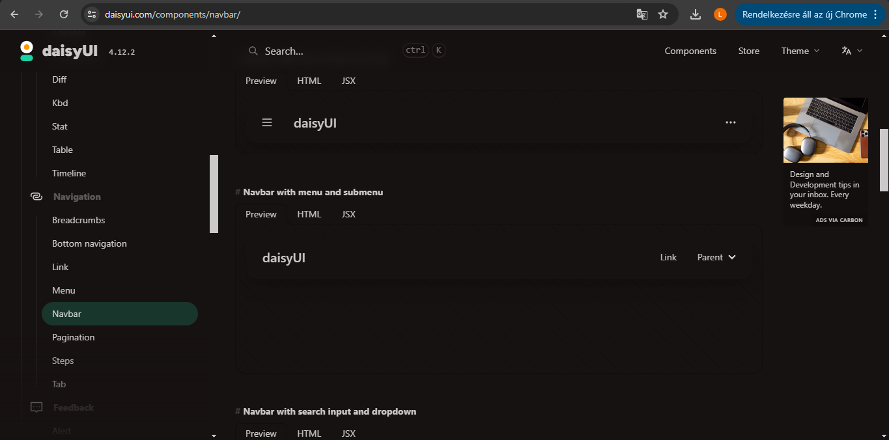
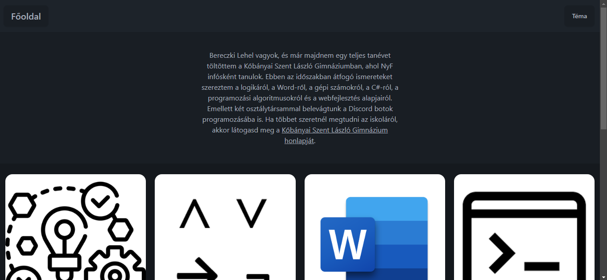

Ebben a témakörben az interaktív digitális kultúra tankönyv feladatai révén bevezetést kaptunk a webprogramozás világába. Az órák során számonkérhető anyagok között szerepel a HTML5 alapvető használata, a DOM (Document Object Model) megértése, valamint a CSS alapszintű alkalmazása. Ezen kívül a Google Fonts integrálása és a felhasználói élményt javító JavaScript használata is fontos részét képezi a tananyagnak.
A szorgalmasabb diákok számára további mélyebb ismeretek is bemutatásra kerültek, mint például a különböző CSS keretrendszerek használata. Kiemelt figyelmet kapott a Tailwind CSS, valamint a daisyUI komponenskönyvtár alkalmazása, amelyek segítségével modern és esztétikus weboldalakat lehet létrehozni. Ezek az eszközök lehetővé teszik a diákok számára, hogy még professzionálisabb és vonzóbb webes projekteket hozzanak létre.
A témakör lezárásaként egy weboldal készül beadandó projekt formájában, amely összefoglalja és alkalmazza a tanultakat. A projekt révén a tanulók gyakorlati tapasztalatot szerezhetnek a webfejlesztés alapjaiban, és megismerhetik a legújabb eszközöket és technikákat, amelyek segítik őket a jövőbeli programozói feladataikban.
